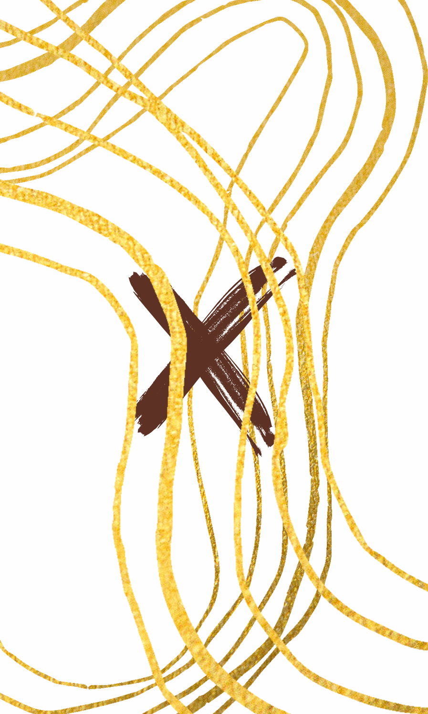
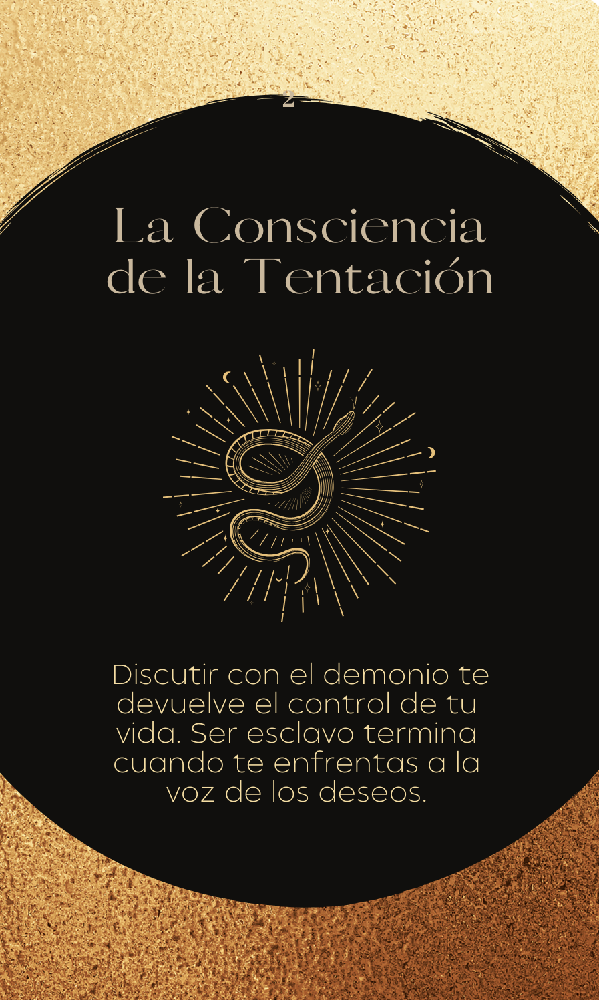
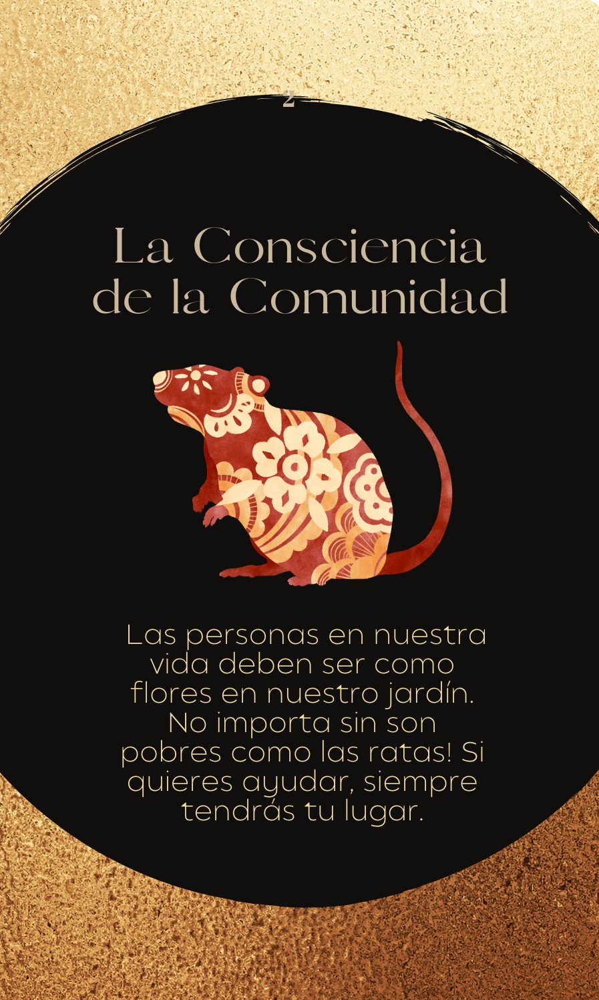
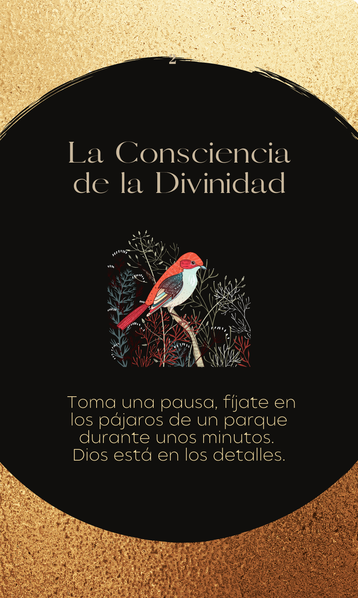
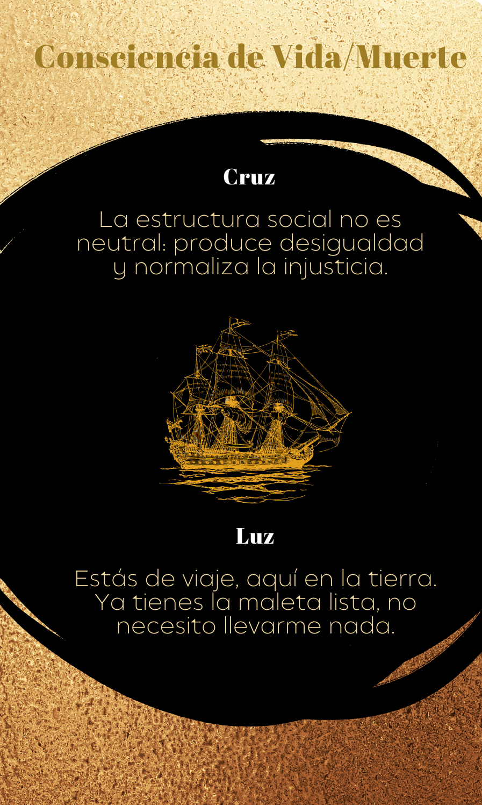

La voz de
un alma ardiente
Un sistema de cartas para la exploración interior. Nacido de la sabiduría de una monja que vivió 103 años mirando hacia dentro.
Una monja de 103 años
y el peso del tiempo
Hay personas cuya sola presencia parece contener siglos. Mi tía-abuela fue una de ellas.
Monja durante 85 de sus 103 años, vivió con una intensidad silenciosa que pocos alcanzan. En su mirada había algo que yo, como psicóloga y como sobrina, no podía dejar que se perdiera: una sabiduría sobre el sufrimiento, la conciencia y la transformación interior que solo da el tiempo bien vivido.
Luz o Cruz es mi forma de preservar esa herencia. Un sistema oracular construido a partir de sus palabras, sus silencios y su particular forma de entender que detrás de toda cruz hay siempre una posibilidad de luz.

«¿Qué cruz estás cargando hoy?»
«Detrás de todo sufrimiento— Inspirado en la sabiduría de la monja
hay una pregunta que aún
no nos hemos atrevido a formular.»
La mecánica de la revelación
Cada carta contiene tres elementos que trabajan juntos para iluminar lo que ya está dentro de ti.
La Cruz
Describe una forma universal de sufrimiento humano, extraída del inconsciente colectivo. No tu dolor particular, sino el arquetipo que hay detrás. Verlo desde fuera, con nombre propio, ya es una forma de empezar a comprenderlo.
La Luz
Una frase de medicina simbólica: palabras que no resuelven el dolor, sino que ofrecen una nueva forma de relacionarse con él. Como un espejo que muestra otro ángulo de lo mismo.
La Conciencia
La toma de conciencia necesaria para que algo pueda cambiar. No una solución, sino una invitación a ver con más claridad qué patrón de comportamiento o pensamiento está en juego.
El proceso comienza con una pregunta simple: «¿Qué cruz estoy cargando hoy?»
Tras unos momentos de atención al propio malestar —sea cual sea su forma—, se selecciona una carta. El sistema funciona como un espejo: no dice lo que deberías hacer, sino lo que ya sabes y no te has atrevido a ver.
Una muestra del mazo
Cada carta es un mundo propio. Estas son algunas de las que componen Luz o Cruz.




Para cuando las palabras
no alcanzan
Luz o Cruz no es una herramienta de adivinación. Es una herramienta de introspección.
Puede ser útil como complemento a un proceso terapéutico, como práctica personal de reflexión, o simplemente como un ritual cotidiano de escucha interior. No requiere ninguna creencia previa, solo la disposición a mirarse con honestidad.
También puede ser un regalo profundo para alguien que está atravesando un momento de búsqueda, de pérdida o de transformación.
Las cartas, en tus manos
El mazo de Luz o Cruz está disponible en formato físico bajo pedido. Si quieres saber más —sobre el oráculo, su proceso creativo, o cómo adquirirlo—, escríbeme.
Preguntar por el oráculo →